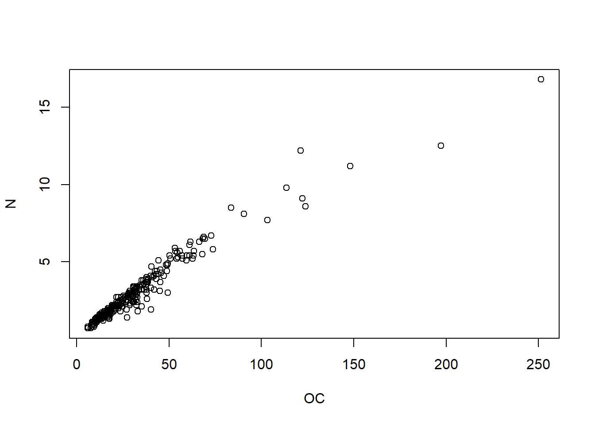
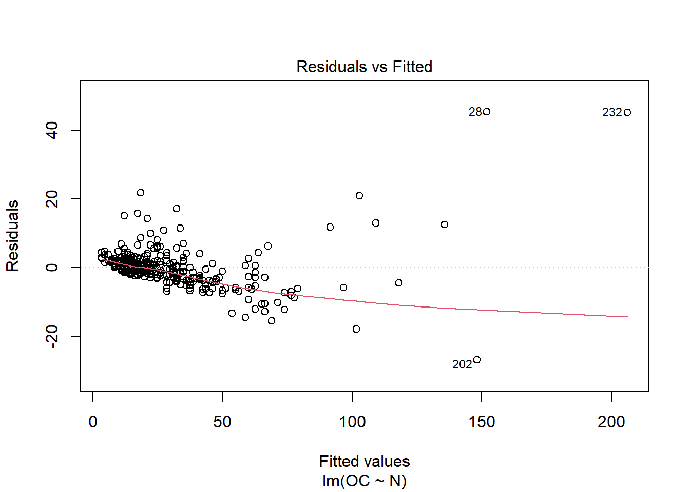
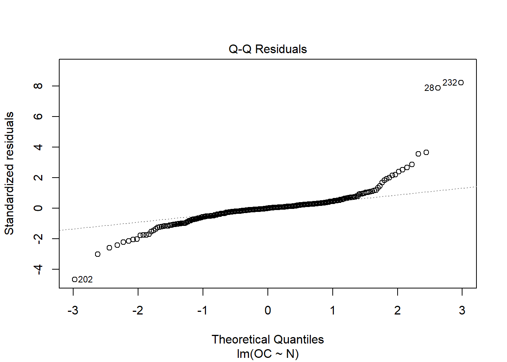
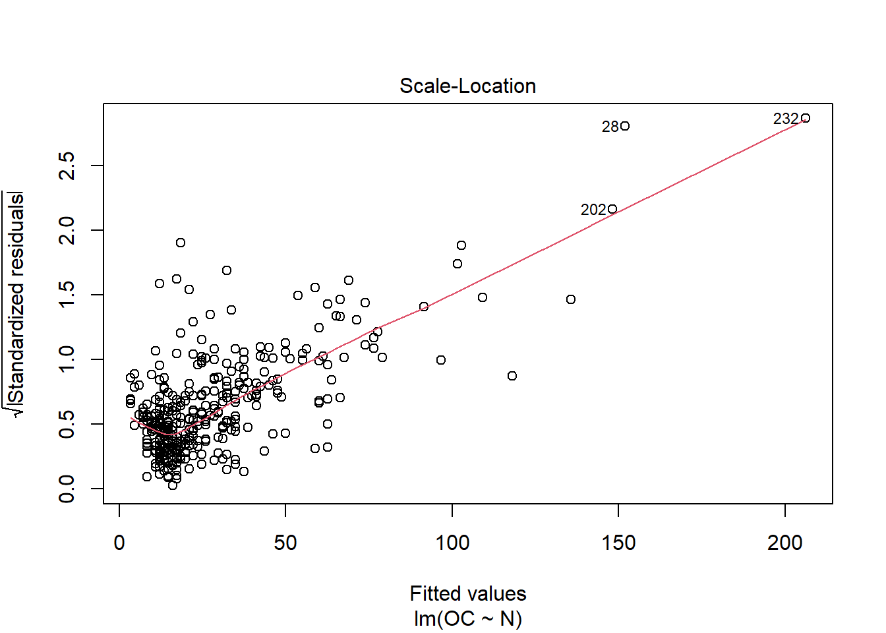
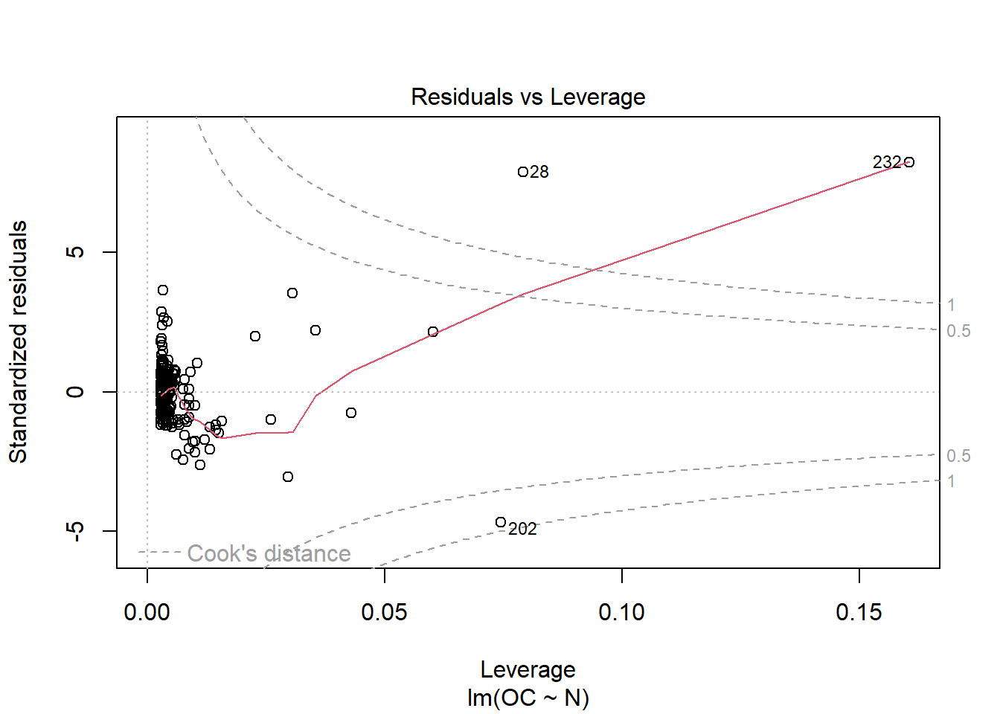

4 Statistical evaluation
When we work with data, is important to describe our data to understand it better. There are a wide variety of statistics used to describe or summarize data in terms of central tendency, shape, position, etc.
# file location
file_location <- "C:/YourFolder/Data/soil_data.txt"
soil_data <- read.table(file_location, header = TRUE)# We separate only two properties to make easier to work with them
pH <- soil_data$pH
OC <- soil_data$OC
N <- soil_data$N
# and we also create a data.frame with those 3 variables (only for easy handling)
data <- as.data.frame(cbind(pH, OC, N))4.1 Descriptive statistics
## [1] 6.738237## [1] 6.85## [1] 3.81## [1] 8.14## [1] 3.81 8.14## [1] 0.7908862## 0% 25% 50% 75% 100%
## 3.8100 6.1625 6.8500 7.3800 8.1400## Min. 1st Qu. Median Mean 3rd Qu. Max.
## 3.810 6.162 6.850 6.738 7.380 8.140# For factors, is interesting to describe how many observations belong to each category
pH_class_count <- as.data.frame(table(soil_data$pH_class))
pH_class_count## Var1 Freq
## 1 acidic 140
## 2 alkaline 67
## 3 neutral 139Some functions as the ‘skewness’ command are not included in base R, but implemented via packages. E.g. moments
## [1] -0.4164928Skewness indicates if our data distribution is symmetric or not:

## [1] 2.619499‘kurtosis’ describe is how long is the tail of our data distribution:

4.2 Correlation
Pearson correlation coefficient cor()
\[{r_{xy}=\frac{\sum_{i = 1}^{n}(x_i-\overline{x})(y_{i}-\overline{y})}{\sqrt{\sum_{i = 1}^{n}(x_{i}-\overline{x})^2}{\sqrt{\sum_{i = 1}^{n}(y_{i}-\overline{y})^2}}}}\]
where:
- \(n\) is sample size
- \(X_{i}\), \(Y_{i}\) are the individual sample points indexed with \(i\)
- \(\overline{x} = \frac{1}{n}\sum_{x = 1}^{n} x_{i}\) (the sample mean);
and analogously for \({\bar {y}}\)
Examples:

So now with our data…
## [1] 0.9705
Attention correlation does not mean direct link between two event be careful with the interpretation. Spurious correlations
4.3 Linear regression lm()
In R, the linear models are written as lm(y ~ x, data)
Example:
##
## Call:
## lm(formula = OC ~ N, data = data)
##
## Residuals:
## Min 1Q Median 3Q Max
## -27.003 -2.030 -0.056 1.587 45.320
##
## Coefficients:
## Estimate Std. Error t value Pr(>|t|)
## (Intercept) -5.4002 0.5552 -9.726 <2e-16 ***
## N 12.5904 0.1686 74.658 <2e-16 ***
## ---
## Signif. codes: 0 '***' 0.001 '**' 0.01 '*' 0.05 '.' 0.1 ' ' 1
##
## Residual standard error: 5.997 on 344 degrees of freedom
## Multiple R-squared: 0.9419, Adjusted R-squared: 0.9417
## F-statistic: 5574 on 1 and 344 DF, p-value: < 2.2e-16Some more functions for the curious ones

When running this command, we obtain a set of 4 plots that are out of the scope of this “introduction”, but:
- Residuals vs Fitted : The residuals are distributed following a systematic pattern around the value 0, indicating that the linear regression is not the best. The residuals are also more concentrated in the center, while towards the extremes they show less dispersion, which could indicate heterogeneity among the error variances (heteroscedasticity). Some residuals stand out, indicating the possible presence of outliers.
- Normal Q-Q: It compares a theoretical normal distribution with the residuals of our model. It should show a straight line for normality assumption and should not show systematic pasterns (should be randomly distributed around that straight line).
- Scale-location: it shows if residuals are spread equally along the ranges of predictors. This is how you can check the assumption of equal variance (homoscedasticity). It’s good if you see a horizontal line with equally (randomly) spread points.
- Residuals vs leverage: Unlike the other plots, this time the patterns are not relevant. We look for outlying values in the upper or lower right corner. These places are where cases with a large weight in the linear regression can be located. Look for cases outside the dotted lines, which means they have high Cook’s distance values.
This is just a visual check, not an air-tight proof, so it is somewhat subjective. But it allows us to see at-a-glance if our assumption is plausible, and if not, how the assumption is violated and what data points contribute to the violation.
Source: Understanding Diagnostic Plots for Linear Regression Analysis4.4 Coefficient of determination with Pearson correlation coefficient cor()
\[R^2≡1-\frac{\sum(y_{i}-\hat{y_{i}})^2}{\sum(y_{i}-\overline{y})^2}\]
\[R^2=r×r\]
## [1] 0.94187034.5 root mean squared error (RMSE)
\[RMSE=\sqrt{\frac{1}{n}\sum_{i = 1}^{n}{(\hat{y_{i}}-y_{i})^2}}\]
## [1] 5.980082